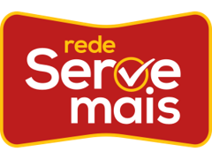

Esta etapa cobre
- A permanência da aplicação WordPress que já está publicada.
- O acompanhamento mensal desse site.
- A continuidade do que a rede usa hoje, sem trocar o sistema.

Proposta comercial
Cuiabá e Várzea Grande
A etapa 1 continua a aplicação em WordPress que a rede já tem. As cinco propostas de site são caminhos diferentes. Vocês escolhem uma. Elas não se somam e não entram todas no mesmo contrato.
Etapa 1
Manter o que já tem
Esta etapa não troca o site por um conceito novo. Ela cuida da aplicação que a rede já utiliza, com acompanhamento mensal.
O WordPress segue no ar. O valor ao lado é só desta etapa. A escolha de um site novo, se acontecer, é uma decisão à parte, na folha final.
A etapa 1 pode seguir sozinha. Escolher um site novo não é condição para manter o WordPress, e manter o WordPress não obriga a contratar um dos cinco caminhos.
Propostas para escolher
Cinco caminhos, uma escolha
Cada proposta é um site completo de conceito. Preços, endereços, horários e textos dentro delas são exemplos, para a rede ver o caminho. Depois da escolha, só o conceito marcado segue para desenvolvimento.
A economia que chega à sua mesa.
Ofertas da semana, setores e as 17 lojas, com a lista ao lado da navegação. Um supermercado direto, feito para achar a oferta.
Hoje tem oferta.
A lista vira o cupom da compra. Corredores, casa Felitá, jornal e vagas no mesmo caminho.
Tudo que a sua casa precisa, perto de você.
Editorial da rede familiar, com a marca Felitá e um destino claro para cada assunto. A página recebe como uma casa, não como um encarte.
Mais perto de você. Mais por menos.
Ofertas e unidades em primeiro plano, do papel da campanha até a lista das lojas. A oferta e a loja mais próxima conduzem a visita.
Sua lista, nossa gôndola.
Faixa da unidade mais próxima, cupom neste aparelho e atalhos de celular para a lista. A unidade perto e a lista ficam à mão o tempo todo.
Folha de escolha
Para devolver marcada
Marquem a etapa 1 e, se quiserem um site novo, uma única proposta. O que não for marcado fica fora do escopo.
Manter a aplicação atual. R$ 10.000 por mês.
Escolham um número. Os outros quatro não entram juntos.
Os conceitos mostram a navegação e o tom de cada caminho. Preços de produto, endereços, horários e textos nesses sites são exemplos e serão trocados pelos dados oficiais da rede depois da escolha. O valor de R$ 10.000 por mês refere-se apenas à etapa 1.
Depois da marcação, o caminho escolhido é o que segue. Esta proposta não contrata as cinco de uma vez.
Nome
Data